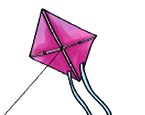

Lesson 9: Letter k
Lesson 9
Letter k

Draw the following pattern in your exercise book.
Keyboard alternative
Type k
Trace the letter k in your exercise book.
Keyboard alternative
Type k
Copy the letter k in your exercise book.
Keyboard alternative
Type k